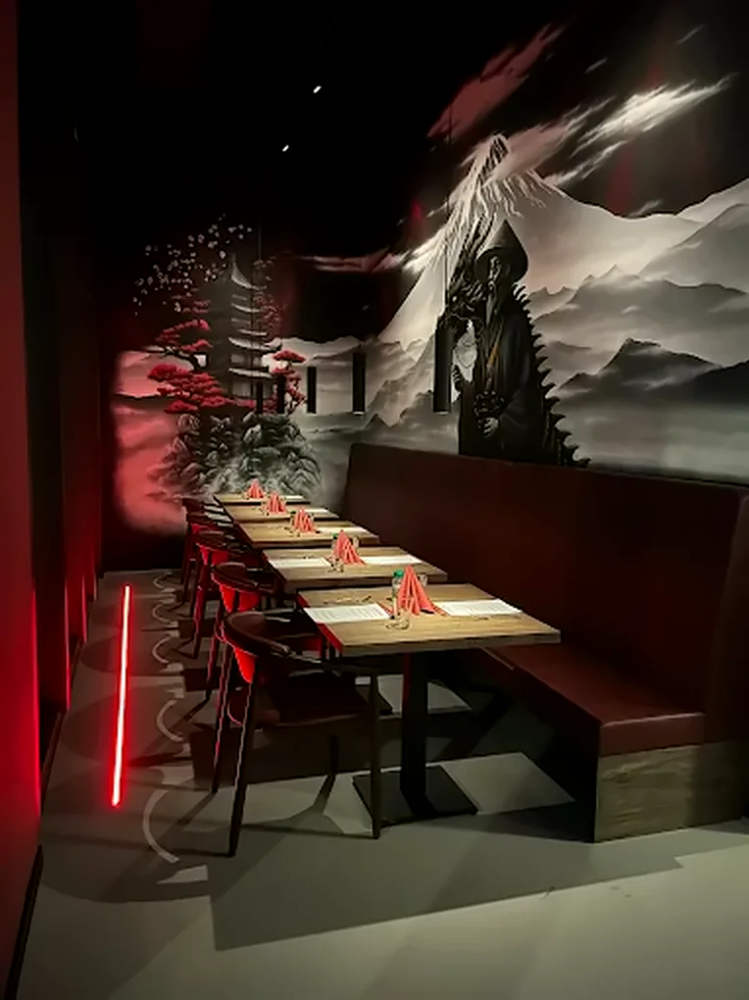
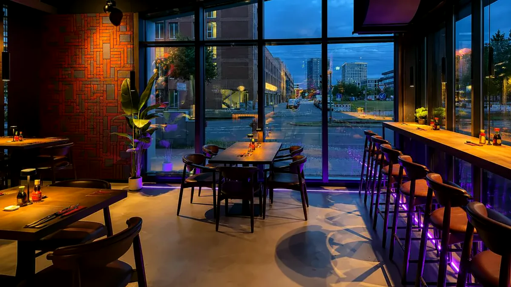

Japanese Restaurant & Izakaya
Akashi
明石 heißt „heller Stein“. Sushi, Ramen und Izakaya in der Überseestadt.
Frisch zubereitetes Sushi und Sashimi, kräftige Ramen und die kleinen Teller einer Izakaya, am Ludwig-Franzius-Platz in Bremen.
- Vor Ortmittags und abends
- Abholung & Lieferungdirekt bei uns bestellt
- 4,7 bei Googleaus 367 Bewertungen
- Sushi & Sashimifrisch zubereitet
- Ramenfünf Sorten, auch vegan
- 72 Gerichteauf der ganzen Karte
Sushi, Ramen und die kleinen Teller einer Izakaya
Im Akashi am Ludwig-Franzius-Platz bekommst du frisch zubereitetes Sushi und Sashimi, kräftige Ramen, knuspriges Tonkatsu und die kleinen Gerichte einer Izakaya, die man am Tisch miteinander teilt.
Du kannst bei uns sitzen bleiben, dein Essen mitnehmen oder es dir liefern lassen.
- Vor Ort mittags und abends
- Zum Mitnehmen direkt bei uns abholen
- Lieferung kontaktlos nach Hause
Speisekarte
72 Gerichte in 8 Kategorien, vor Ort, zum Mitnehmen oder geliefert. Wähl eine Kategorie, die ganze Karte öffnet sich an der passenden Stelle.



Dein Tisch im Akashi
Sag uns, wann du kommen möchtest und mit wie vielen Leuten. Wir prüfen die Anfrage und bestätigen dir den Tisch per E-Mail oder Telefon.
- Adresse
- Ludwig-Franzius-Platz 13
28217 Bremen - Telefon
- 0421 43093028
- info@akashi-bremen.de
- Öffnungszeiten
-
Mo – Do 12:00 – 14:30
17:00 – 21:00Freitag 12:00 – 14:30
17:00 – 21:30Samstag 17:00 – 21:30 Sonntag geschlossen - Gruppen ab 9 Personen
- Ruf uns am besten direkt an, dann planen wir den Abend gemeinsam.
Deine Anfrage ist angekommen
Wir melden uns mit der Bestätigung per E-Mail oder Telefon.
Etwas ändern? Ruf uns an unter 0421 43093028.
Adresse
Ludwig-Franzius-Platz 13
28217 Bremen
In Google Maps öffnen Route planen
Öffnungszeiten
| Mo: | 12:00–14:30, 17:00–21:00 |
|---|---|
| Di: | 12:00–14:30, 17:00–21:00 |
| Mi: | 12:00–14:30, 17:00–21:00 |
| Do: | 12:00–14:30, 17:00–21:00 |
| Fr: | 12:00–14:30, 17:00–21:30 |
| Sa: | 17:00–21:30 |
| So: | Ruhetag |
Telefonisch direkt bei uns: 0421 43093028

Dabei lädt Google Maps und erhält deine IP-Adresse. Mehr in der Datenschutzerklärung.